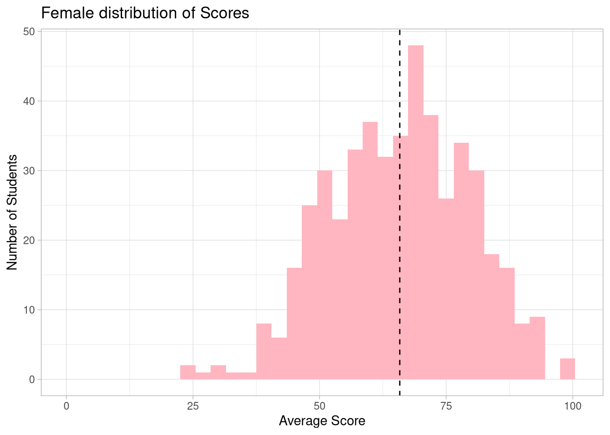

In this project, we will analyze different qualitative variables of various students and see how these affected their test scores. In order to do this, lets first load in our data and packages.
Now that we have our data lets take a look at all of our variables in the data set.
“gender”: The gender of the student; 1 is female, and 0 is male
“race_ethnicity”: The race or ethnicity of a student split into anonymous groups labeled group A, group B, etc.
“parental_level_of_education”: The highest education achieved by the parents of the student
“lunch”: Whether or not the student had lunch before the test; 1 is yes, 0 is no
“test_preparation_course”: Whether or not the student took a test preparation course before the test; 1 is yes, 0 is no
“math_score”: The score the student received on the math portion of the test
“reading_score”: The score the student received on the reading portion of the test
“writing_score”: The score the student received on the writing portion of the test
“total_score”: The total score of the student which is the sum of their math, reading, and writing scores
“average_score”: The average score a student achieved between their math, reading, and writing scores
We will be using these variables to find predictors for how well a student did on the test in order to better prepare the next generation of fictitious students. We will be answering questions such as how important the preparation course is for success and how important eating lunch is for your test score.
Qualitative analysis
Now that we understand the data set, lets look to see what different variables helped improve or decrease a students test score. To better understand the distribution of the scores we can look at the math, reading, and writing scores as box plots.
Looking at these box plots we see that the distribution of scores among the math, reading, and writing categories is relatively similar for each student. Now lets start to implement new variables into the graphs in order to find out which ones could be predictive. Let’s start with what would be logically assumed to be significant for a students score, the test preparation course.
Code
data <- data %>%mutate(test_preparation_course =factor(test_preparation_course))#Allows the legends to correctly label the different colorsdata1 <- data %>%mutate(test_preparation_course =factor(test_preparation_course, levels =c(0, 1),labels =c("No Prep", "Completed Prep")))math_box_test <-ggplot(data1, aes(x='', y = math_score, fill = test_preparation_course))+geom_boxplot(width =0.5)+theme_light() +ylab('Math Score') +theme(axis.ticks.x =element_blank(), axis.text.x =element_blank())+labs(fill ='Test Preparation')+xlab('')reading_box_test <-ggplot(data1, aes(x='', y = reading_score, fill = test_preparation_course))+geom_boxplot(width =0.5)+theme_light() +ylab('Reading Score')+theme(axis.ticks.x =element_blank(), axis.text.x =element_blank()) +labs(fill ='Test Preparation')+xlab('')writing_box_test <-ggplot(data1, aes(x='', y = writing_score, fill = test_preparation_course))+geom_boxplot(width =0.5)+theme_light() +ylab('Writing Score')+theme(axis.ticks.x =element_blank(), axis.text.x =element_blank()) +labs(fill ='Test Preparation')+xlab('')
We see a noticeable increase in score for students who completed the test preparation course versus those students who didn’t. Now to get a more complete picture of the impact of the test preparation on average score and we can test this by looking at the distribution of students who took the test course over the group of students in each letter grade.
We can notice the trend that students who got an “A” or “B” average score were much more likely to have taken the preparation course than the students who got a “C” or below average score. This helps us identify the test preparation course as a significant variable in predicting score. Now lets look at another variable that may not matter as much, the lunch variable. Lets recreate the graphs from above, but with lunch instead of test preparation course.
Code
#Allows the legends to correctly label the different colorsdata1 <- data1 %>%mutate(lunch = data$lunch)data1 <- data1 %>%mutate(lunch =factor(lunch, levels =c(0, 1),labels =c("No", "Yes")))math_box_lunch <-ggplot(data1, aes(x='', y = math_score, fill = lunch))+geom_boxplot(width =0.5)+theme_light() +ylab('Math Score') +theme(axis.ticks.x =element_blank(), axis.text.x =element_blank())+labs(fill ='Did the student have lunch?')+xlab('')reading_box_lunch <-ggplot(data1, aes(x='', y = reading_score, fill = lunch))+geom_boxplot(width =0.5)+theme_light() +ylab('Reading Score') +theme(axis.ticks.x =element_blank(), axis.text.x =element_blank())+labs(fill ='Did the student have lunch?')+xlab('')writing_box_lunch <-ggplot(data1, aes(x='', y = writing_score, fill = lunch))+geom_boxplot(width =0.5)+theme_light() +ylab('Math Score') +theme(axis.ticks.x =element_blank(), axis.text.x =element_blank())+labs(fill ='Did the student have lunch?')+xlab('')
Similar to test preparation, the students who had lunch seemed to do noticeably better on the test than students who did not have lunch. We can further analyzing this by looking at the students letter grade from their average score and comparing the students from within each group based on if they ate lunch.
Code
group2 <- data1 %>%group_by(letter_grade, lunch) %>%summarize(count =n(), .groups ='drop')average_score_bar_lunch <-ggplot(group2, aes(x = letter_grade, y = count, fill = lunch))+geom_col(position ='dodge')+theme_light() +ylab("Count") +xlab("Letter Grade") +labs(fill ="Did the student have lunch?")average_score_bar_lunch
Shockingly, the proportion of students who had lunch in each letter grade seemed to matter very much to their success. Higher grades like an ‘A’ or ‘B’ had most of the students eat lunch, while students who got a ‘D’ or ‘F’ were much more likely to not have eaten lunch. Another variable we can take a look at is the parental education of the student and the impact of that on their average score. In order to do this, lets first turn the parental education variable into a factor of ranked levels.
Code
data1 <- data1 %>%mutate(parental_level_of_education =factor(data$parental_level_of_education, levels =c('some high school', 'high school', 'some college', "associate's degree", "bachelor's degree", "master's degree"), labels =c('Some High School','High School', 'Some College', "Associate's Degree", "Bachelor's Degree", "Master's Degree"), ordered =TRUE))ggplot(data1, aes(x = parental_level_of_education, y = average_score))+geom_boxplot(position =position_dodge(width =2), fill ='lightgreen')+theme_light() +xlab('Level of Parental Education') +ylab('Average Score')
We can see from the progression of the box plots that there is slight positive correlation that as the parental level of education increases the students score slowly start to increase. This could be due to parents that have higher levels of education emphasizing the importance of school more. Now lets see if there is any noticeable difference in average score between males and females on the test.
This graph is a little hard to read so lets compare two histograms side by side to see if we can draw any significance. Let’s first split the data into male and female in order to create the graphs. (Note: Another way to create these graphs is to use the “facet_wrap” command from ggplot. We will use this later.)
Code
male_data <- data1 %>%filter(gender =='Male')female_data <-data1 %>%filter(gender =='Female')ggplot(male_data, aes(x = average_score))+geom_histogram(binwidth =3, fill ='lightblue') +theme_light() +xlab('Average Score') +ylab('Number of Students') +labs(title ='Male distribution of Scores') +geom_vline(aes(xintercept =mean(male_data$average_score)), linetype ='dashed', fill ='lightgrey')+xlim(0,101)
Code
ggplot(female_data, aes(x = average_score))+geom_histogram(binwidth =3, , fill ='lightpink') +theme_light() +xlab('Average Score') +ylab('Number of Students') +labs(title ='Female distribution of Scores')+geom_vline(aes(xintercept =mean(female_data$average_score)), linetype ='dashed', fill ='lightgrey') +xlim(0,101)

The dotted line represents the mean score for females and males respectively. Looking at the distribution and dotted line we can see that males did slightly better on the test on average. We can look even further by comparing the scores of each section; math, reading, and writing.
Code
# Math scoresggplot(data1, aes(x = math_score, fill = gender))+geom_histogram(binwidth =3) +theme_light() +xlab('Average Score') +ylab('Number of Students') +facet_wrap(~gender) +scale_fill_manual(values =c('Male'='lightblue', 'Female'='lightpink'))+geom_vline(data = data1, aes(xintercept =mean(math_score)), linetype ="dashed", color ="black") +labs(title ='Distribution of Math Scores')
Code
ggplot(data1, aes(x = reading_score, fill = gender))+geom_histogram(binwidth =3) +theme_light() +xlab('Average Score') +ylab('Number of Students') +facet_wrap(~gender) +scale_fill_manual(values =c('Male'='lightblue', 'Female'='lightpink'))+geom_vline(data = data1, aes(xintercept =mean(reading_score)), linetype ="dashed", color ="black") +labs(title ='Distribution of Reading Scores')
Code
ggplot(data1, aes(x = writing_score, fill = gender))+geom_histogram(binwidth =3) +theme_light() +xlab('Average Score') +ylab('Number of Students') +facet_wrap(~gender) +scale_fill_manual(values =c('Male'='lightblue', 'Female'='lightpink'))+geom_vline(data = data1, aes(xintercept =mean(writing_score)), linetype ="dashed", color ="black") +labs(title ='Distribution of Writing Scores')
From the distributions, there is nothing that we can definitively derive from the graphs. The males did insignificantly better on the subject scores as the females.
Conclusion
In this analysis, we looked at four different variables and how effective they are at predicting success on the test through many metrics such as letter grade, average score, math score, reading score, and writing score. We closely analyzed three different variables to used for this prediction: parental level of education, gender, if the student ate lunch, and if the student took the prep course. We found that both eating lunch and taking the prep course were both indicators that a student was more likely to do well on the test. On average, we saw a small increase in score for those who had parents who had higher levels of education and we also found that males did slightly better on average on this test than females.